Animación cinematográfica de renders arquitectónicos. Desde un clip de 3 segundos hasta un film de 40 a 70 segundos con storyboard completo.
Desde un clip de 3 segundos hasta un film de 40 a 70 segundos con storyboard completo.
Una imagen de referencia. Una descripción. Un clip cinematográfico de entre 3 y 15 segundos.
El proceso arranca en el proyecto KLING dentro de Claude. Claude actúa como cinematógrafo experto: analiza la imagen y genera un prompt optimizado para Kling 3.0.
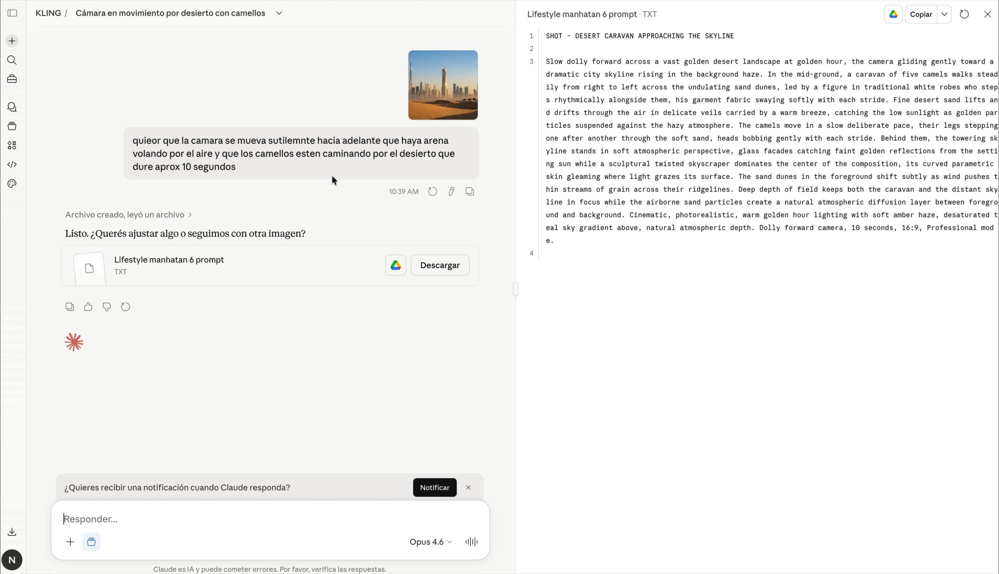
Kling es la herramienta que anima todos los reframes y renders. Para acceder, pedirle a IT — se usa con la cuenta de contacto, igual que Weavy.
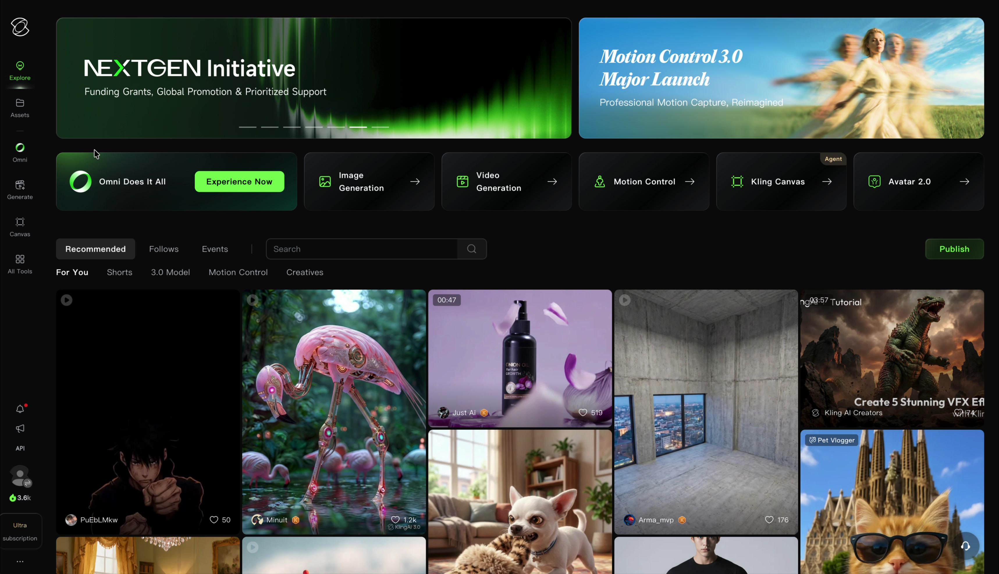
Dentro del proyecto en Canvas se construye el flujo nodal: imagen de referencia + prompt de Claude → nodo de generación.
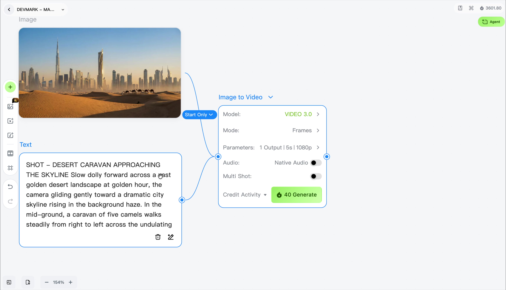
Antes de generar, configurar siempre con estos valores por defecto. Para testeos usar 720p para ahorrar créditos; pasar a 1080p solo cuando el AD aprueba.
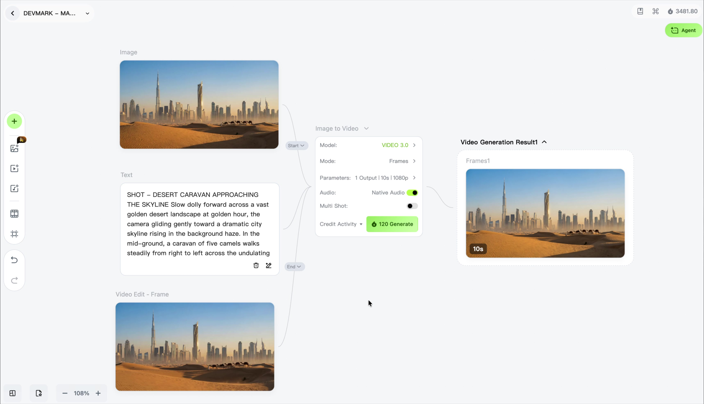
Una vez generado el video, el flujo de revisión sigue la misma lógica que Reframes: Miro → AD → correcciones → aprobación → 1080p → upscale opcional.
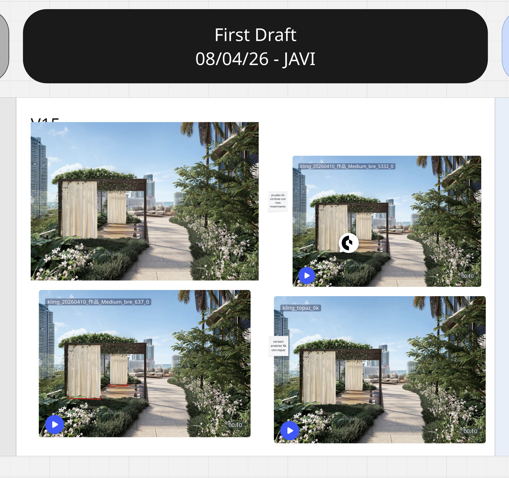
Varios planos. Una imagen. Y el Video Editor permite editarlo de manera sencilla si necesitamos.
El mismo proyecto KLING en Claude. En pleno castellano describir los planos que se necesitan y la duración total aproximada. Claude genera el prompt completo con cada shot numerado.
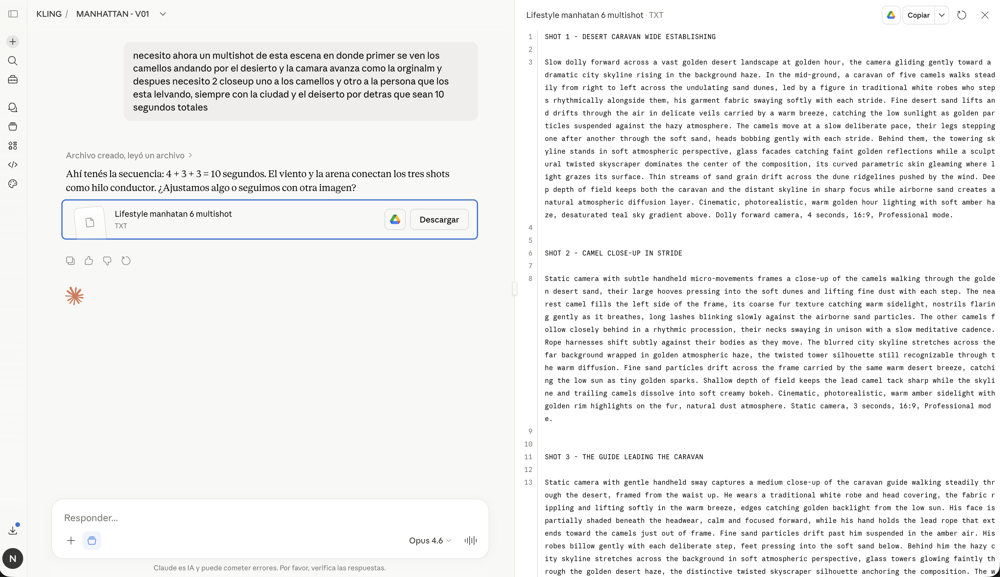
En el modo Generate de Kling (no Canvas): pegar el prompt, activar Multi Shot y configurar los parámetros. El formato se elige entre las opciones que da Kling: 16:9, 1:1 o vertical. El recorte lo hace Kling automáticamente y no permite elegir desde dónde recortar — si necesitás un recorte específico, hacelo antes en Photoshop y subí ese frame.
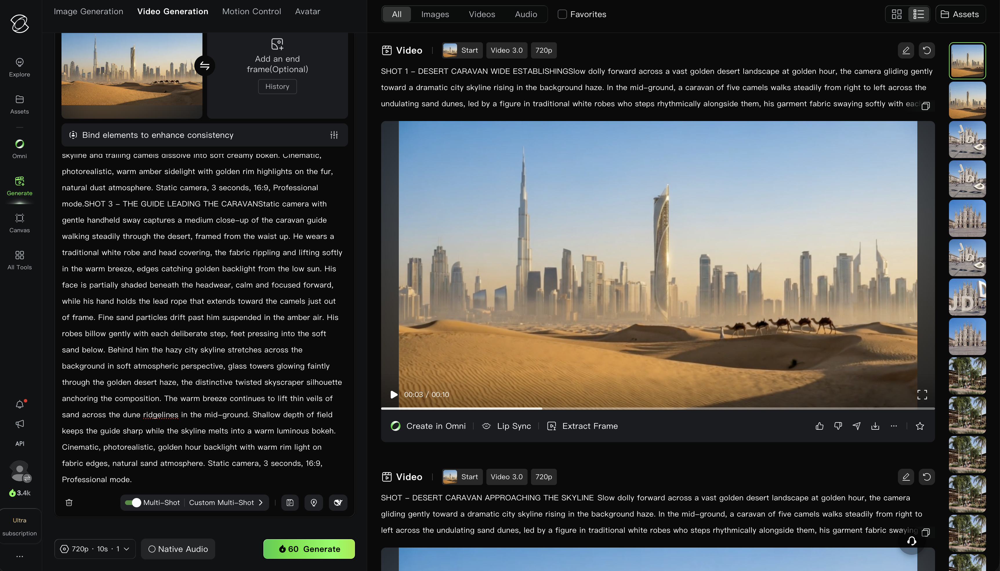
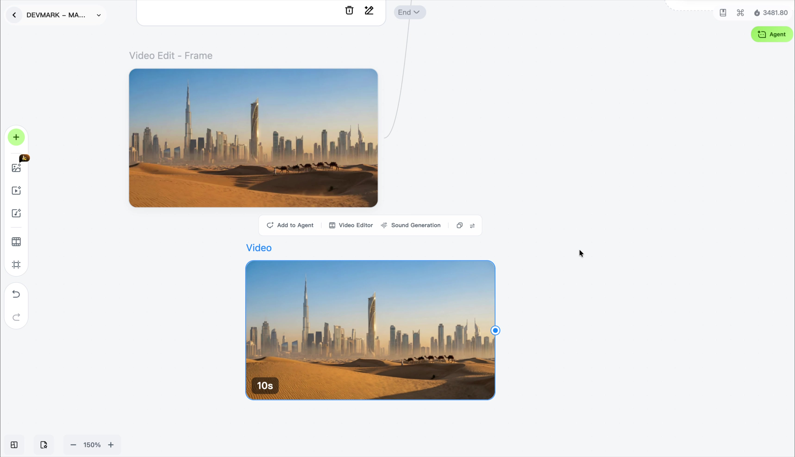
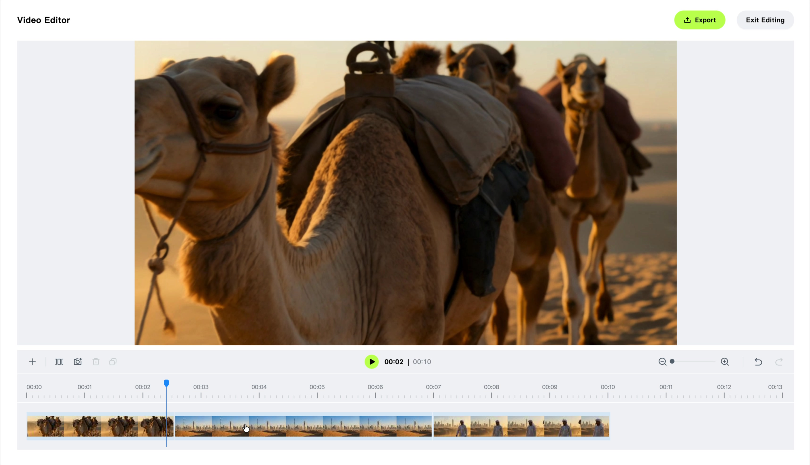
Kling ofrece dos formas de agregar audio a los videos generados, según la duración y el nivel de control deseado.
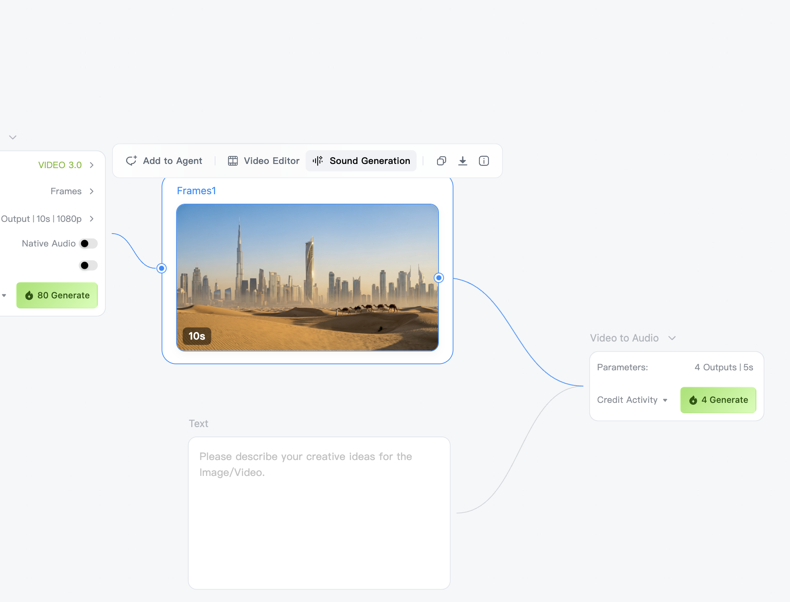
Claude actúa como director de cine. Analiza tus imágenes, diseña el storyboard completo y genera cada escena con instrucciones exactas de Reframe y Kling.
El proyecto FILM en Claude está configurado como director de cine y cinematógrafo arquitectónico. Con una o más imágenes y un pequeño puntapié inicial, Claude toma la posta.
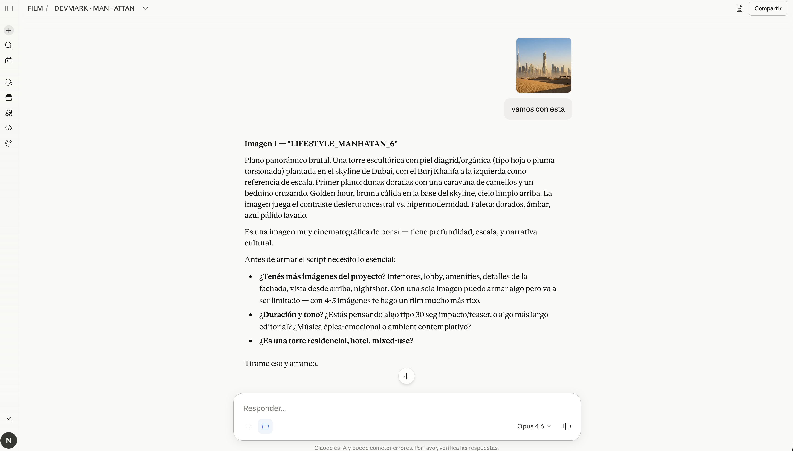
| # | Nombre | Duración | Descripción |
|---|---|---|---|
| 1 | Desert Silence | 5 seg | Solo dunas, arena y bruma dorada. Sin skyline. El vacío del desierto. |
| 2 | The Caravan | 5 seg | Camellos y beduino en plano medio-largo. La caravana avanza de izquierda a derecha. |
| 3 | Reveal | 5 seg | La cámara abre y aparece el skyline: el desierto ancestral vs. la hipermodernidad. |
| 4 | Tower Skin | 5 seg | Zoom in a la piel diagrid de la torre. Detalle arquitectónico, geometría y luz. |
| 5 | Crown | 4 seg | Contrapicado al remate de la torre. Verticalidad pura. Cielo limpio. |
| 6 | Scale | 5 seg | La torre junto al Burj Khalifa. La escala del proyecto en contexto. |
| 7 | Golden Horizon | 5 seg | Plano panorámico completo. Golden hour plena. El desierto en primer plano. |
| 8 | Nightfall | 6 seg | Misma composición pero de noche. Torre iluminada. Cierre con impacto. Corte a negro. |
Este es el storyboard que Claude generó a partir del intercambio que vimos en el slide anterior — cada fila es una escena con nombre, duración y descripción cinematográfica. Una vez aprobado, Claude arranca a generar todo lo que vemos en los slides siguientes.
Una vez aprobado el storyboard, Claude genera las ideas de ejecución para cada escena: instrucciones exactas para Reframe y para Kling.
Por cada escena Claude especifica:
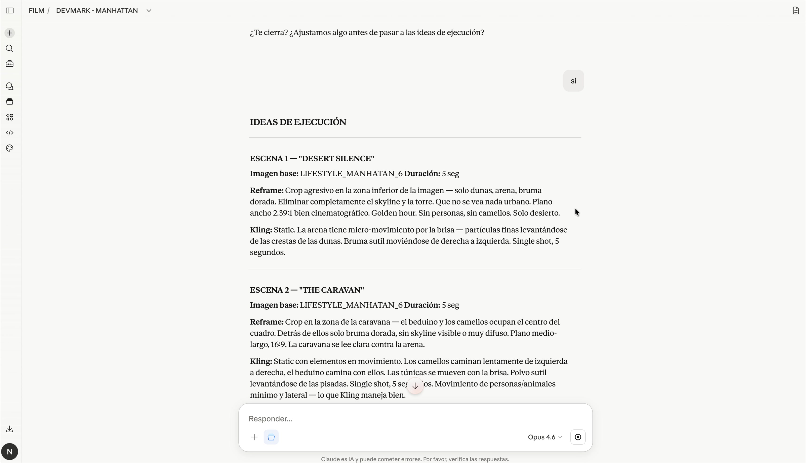
Con todos los clips de Kling listos y aprobados por AD, se ensambla el film completo en Premiere Pro.
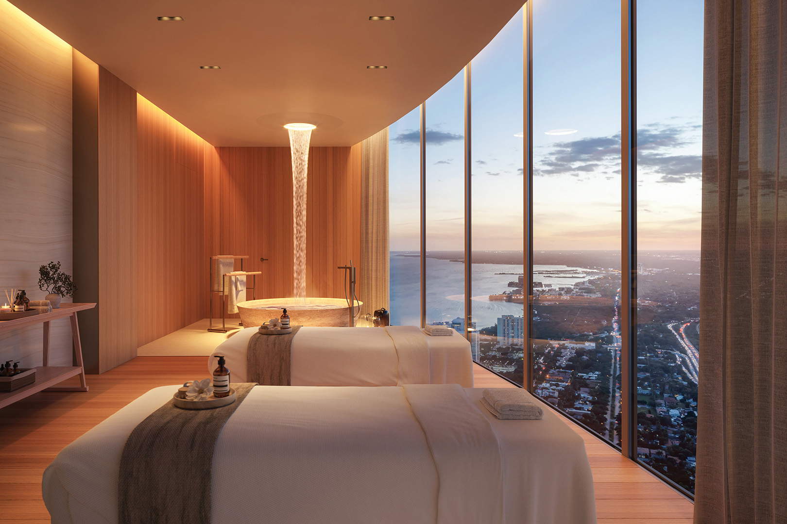